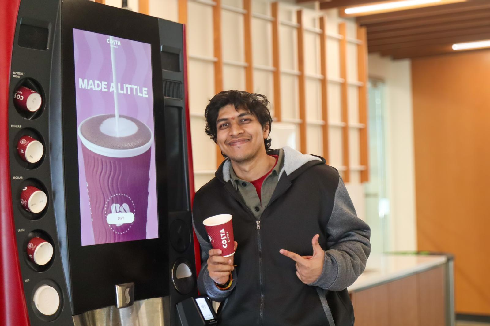
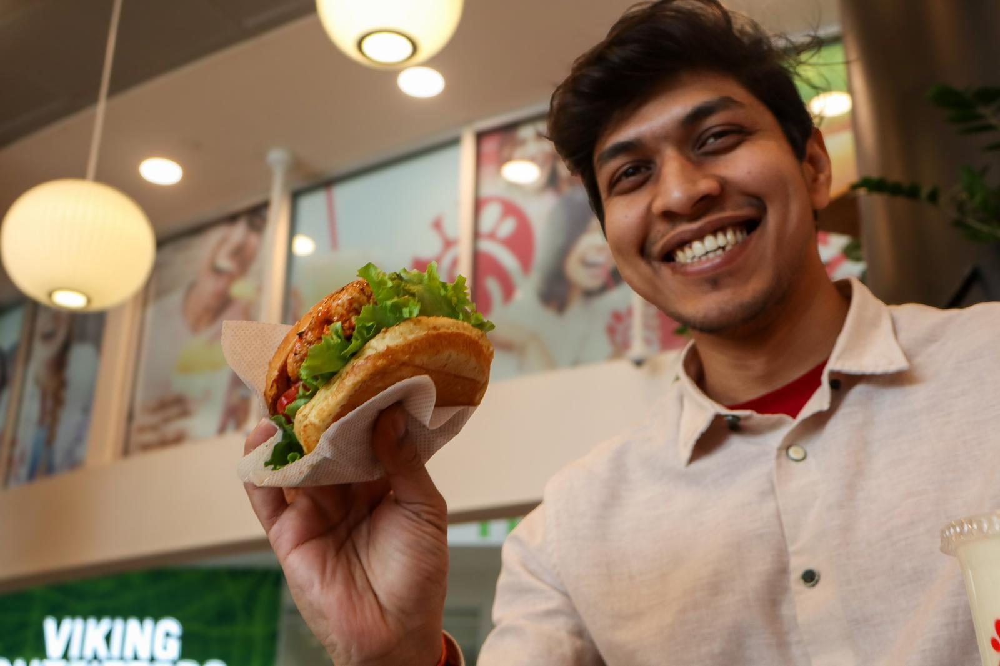

Excel modeling
Advanced Excel, pivot tables, formulas, and structured budget trackers used for variance review, cost estimation, expenditure monitoring, and decision-ready summaries.
Master of Information Systems graduate from Cleveland State University with experience in cost estimation, budget support, procurement documentation, dashboards, and stakeholder reporting.
Profile



Excel + Tableau
Advanced Excel, pivot tables, formulas, and structured budget trackers used for variance review, cost estimation, expenditure monitoring, and decision-ready summaries.
Dashboard thinking for trend analysis, stakeholder reporting, filters, drilldowns, and visual narratives that help non-technical teams understand what changed and why.
I connect the workbook, dashboard, and recommendation: clean the data, validate the assumptions, surface the variance, and explain the operational next step.
Selected Work
AI procurement copilot for sourcing, RFQ generation, supplier comparison, vendor management, bid support, and auditable decision review.
Budget preparation, expenditure tracking, cost monitoring, and project reporting for healthcare infrastructure delivery.
Cost estimates and budget models for 35+ cleanroom and healthcare projects, including a USD 381,850 Nepal healthcare-sector engagement.
AI recommendation system using weather, soil, and plant data to improve crop decision support through external APIs and model evaluation.
NASA technology-based civic/environmental AI solution to detect local algal bloom problems with a 90% accuracy model.
SQL/MongoDB-backed transportation booking system with experiment metrics designed to improve user-flow performance.
Client-facing website built as a free-to-use marketing and customer-support tool for a home-loan advisory service.
Experience
Building procurement workflows, supplier data models, and human-in-the-loop AI decision support through the Weston Ideation Lab.
Student Government Treasurer, GFAC Policy Review Board, Green Blazer, Student Dining Ambassador, and campus engagement analytics support.
Budget support, reporting, dashboards, operational coordination, and cross-functional project delivery in healthcare infrastructure.
Estimation models, forecast visualizations, capital expenditure trend analysis, and cleanroom project budgeting.
Capabilities
Advanced Excel, SQL, Python, Power BI, Tableau, MongoDB, statistical analysis, dashboards.
Budget support, cost estimation, expenditure tracking, procurement documentation, variance analysis.
Process mapping, data validation, Agile, Waterfall, MS Project, Trello, Jira, Confluence.
Oracle AI Foundations, Generative AI & Prompt Engineering, National Cyber League, Statistics I & II.
Contact